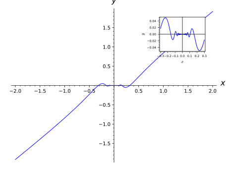
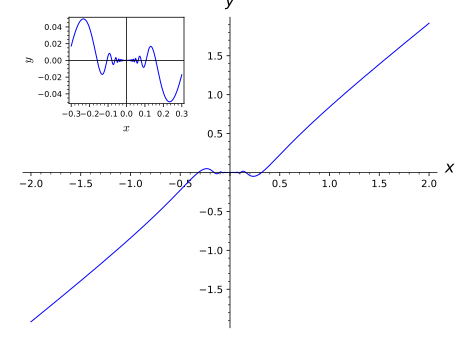

Graphics objects¶
This file contains the definition of the class Graphics.
Usually, you don’t call the constructor of this class directly
(although you can do it), you would use plot() instead.
AUTHORS:
- Jeroen Demeyer (2012-04-19): split off this file from plot.py (trac ticket #12857)
- Punarbasu Purkayastha (2012-05-20): Add logarithmic scale (trac ticket #4529)
- Emily Chen (2013-01-05): Add documentation for
show()figsize parameter (trac ticket #5956) - Eric Gourgoulhon (2015-03-19): Add parameter axes_labels_size (trac ticket #18004)
- Eric Gourgoulhon (2019-05-24):
GraphicsArraymoved to new modulemultigraphics; various improvements and fixes inGraphics.matplotlib()andGraphics._set_scale; new methodGraphics.inset()
-
class
sage.plot.graphics.Graphics¶ Bases:
sage.misc.fast_methods.WithEqualityById,sage.structure.sage_object.SageObjectThe Graphics object is an empty list of graphics objects. It is useful to use this object when initializing a for loop where different graphics object will be added to the empty object.
EXAMPLES:
sage: G = Graphics(); print(G) Graphics object consisting of 0 graphics primitives sage: c = circle((1,1), 1) sage: G+=c; print(G) Graphics object consisting of 1 graphics primitive
Here we make a graphic of embedded isosceles triangles, coloring each one with a different color as we go:
sage: h=10; c=0.4; p=0.5 sage: G = Graphics() sage: for x in srange(1,h+1): ....: l = [[0,x*sqrt(3)],[-x/2,-x*sqrt(3)/2],[x/2,-x*sqrt(3)/2],[0,x*sqrt(3)]] ....: G+=line(l,color=hue(c + p*(x/h))) sage: G.show(figsize=[5,5])
We can change the scale of the axes in the graphics before displaying.:
sage: G = plot(exp, 1, 10) # long time sage: G.show(scale='semilogy') # long time
-
_rich_repr_(display_manager, **kwds)¶ Rich Output Magic Method
See
sage.repl.rich_outputfor details.EXAMPLES:
sage: from sage.repl.rich_output import get_display_manager sage: dm = get_display_manager() sage: g = Graphics() sage: g._rich_repr_(dm) OutputImagePng container
-
add_primitive(primitive)¶ Adds a primitive to this graphics object.
EXAMPLES:
We give a very explicit example:
sage: G = Graphics() sage: from sage.plot.line import Line sage: from sage.plot.arrow import Arrow sage: L = Line([3,4,2,7,-2],[1,2,e,4,5.],{'alpha':1,'thickness':2,'rgbcolor':(0,1,1),'legend_label':''}) sage: A = Arrow(2,-5,.1,.2,{'width':3,'head':0,'rgbcolor':(1,0,0),'linestyle':'dashed','zorder':8,'legend_label':''}) sage: G.add_primitive(L) sage: G.add_primitive(A) sage: G Graphics object consisting of 2 graphics primitives
-
aspect_ratio()¶ Get the current aspect ratio, which is the ratio of height to width of a unit square, or ‘automatic’.
OUTPUT: a positive float (height/width of a unit square), or ‘automatic’ (expand to fill the figure).
EXAMPLES:
The default aspect ratio for a new blank Graphics object is ‘automatic’:
sage: P = Graphics() sage: P.aspect_ratio() 'automatic'
The aspect ratio can be explicitly set different than the object’s default:
sage: P = circle((1,1), 1) sage: P.aspect_ratio() 1.0 sage: P.set_aspect_ratio(2) sage: P.aspect_ratio() 2.0 sage: P.set_aspect_ratio('automatic') sage: P.aspect_ratio() 'automatic'
-
axes(show=None)¶ Set whether or not the \(x\) and \(y\) axes are shown by default.
INPUT:
show- bool
If called with no input, return the current axes setting.
EXAMPLES:
sage: L = line([(1,2), (3,-4), (2, 5), (1,2)])
By default the axes are displayed.
sage: L.axes() True
But we turn them off, and verify that they are off
sage: L.axes(False) sage: L.axes() False
Displaying L now shows a triangle but no axes.
sage: L Graphics object consisting of 1 graphics primitive
-
axes_color(c=None)¶ Set the axes color.
If called with no input, return the current axes_color setting.
INPUT:
c- an RGB color 3-tuple, where each tuple entry is a float between 0 and 1
EXAMPLES: We create a line, which has like everything a default axes color of black.
sage: L = line([(1,2), (3,-4), (2, 5), (1,2)]) sage: L.axes_color() (0, 0, 0)
We change the axes color to red and verify the change.
sage: L.axes_color((1,0,0)) sage: L.axes_color() (1.0, 0.0, 0.0)
When we display the plot, we’ll see a blue triangle and bright red axes.
sage: L Graphics object consisting of 1 graphics primitive
-
axes_label_color(c=None)¶ Set the color of the axes labels.
The axes labels are placed at the edge of the x and y axes, and are not on by default (use the
axes_labelscommand to set them; see the example below). This function just changes their color.INPUT:
c- an RGB 3-tuple of numbers between 0 and 1
If called with no input, return the current axes_label_color setting.
EXAMPLES: We create a plot, which by default has axes label color black.
sage: p = plot(sin, (-1,1)) sage: p.axes_label_color() (0, 0, 0)
We change the labels to be red, and confirm this:
sage: p.axes_label_color((1,0,0)) sage: p.axes_label_color() (1.0, 0.0, 0.0)
We set labels, since otherwise we won’t see anything.
sage: p.axes_labels(['$x$ axis', '$y$ axis'])
In the plot below, notice that the labels are red:
sage: p Graphics object consisting of 1 graphics primitive
-
axes_labels(l=None)¶ Set the axes labels.
INPUT:
l- (default: None) a list of two strings or None
OUTPUT: a 2-tuple of strings
If l is None, returns the current
axes_labels, which is itself by default None. The default labels are both empty.EXAMPLES: We create a plot and put x and y axes labels on it.
sage: p = plot(sin(x), (x, 0, 10)) sage: p.axes_labels(['$x$','$y$']) sage: p.axes_labels() ('$x$', '$y$')
Now when you plot p, you see x and y axes labels:
sage: p Graphics object consisting of 1 graphics primitive
Notice that some may prefer axes labels which are not typeset:
sage: plot(sin(x), (x, 0, 10), axes_labels=['x','y']) Graphics object consisting of 1 graphics primitive
-
axes_labels_size(s=None)¶ Set the relative size of axes labels w.r.t. the axes tick marks.
INPUT:
s- float, relative size of axes labels w.r.t. to the tick marks, the size of the tick marks being set byfontsize().
If called with no input, return the current relative size.
EXAMPLES:
sage: p = plot(sin(x^2), (x, -3, 3), axes_labels=['$x$','$y$']) sage: p.axes_labels_size() # default value 1.6 sage: p.axes_labels_size(2.5) sage: p.axes_labels_size() 2.5
Now the axes labels are large w.r.t. the tick marks:
sage: p Graphics object consisting of 1 graphics primitive
-
axes_range(xmin=None, xmax=None, ymin=None, ymax=None)¶ Set the ranges of the \(x\) and \(y\) axes.
INPUT:
xmin, xmax, ymin, ymax- floats
EXAMPLES:
sage: L = line([(1,2), (3,-4), (2, 5), (1,2)]) sage: L.set_axes_range(-1, 20, 0, 2) sage: d = L.get_axes_range() sage: d['xmin'], d['xmax'], d['ymin'], d['ymax'] (-1.0, 20.0, 0.0, 2.0)
-
axes_width(w=None)¶ Set the axes width. Use this to draw a plot with really fat or really thin axes.
INPUT:
w- a float
If called with no input, return the current
axes_widthsetting.EXAMPLES: We create a plot, see the default axes width (with funny Python float rounding), then reset the width to 10 (very fat).
sage: p = plot(cos, (-3,3)) sage: p.axes_width() 0.8 sage: p.axes_width(10) sage: p.axes_width() 10.0
Finally we plot the result, which is a graph with very fat axes.
sage: p Graphics object consisting of 1 graphics primitive
-
description()¶ Print a textual description to stdout.
This method is mostly used for doctests.
EXAMPLES:
sage: print(polytopes.hypercube(2).plot().description()) Polygon defined by 4 points: [(1.0, 1.0), (-1.0, 1.0), (-1.0, -1.0), (1.0, -1.0)] Line defined by 2 points: [(-1.0, -1.0), (-1.0, 1.0)] Line defined by 2 points: [(-1.0, -1.0), (1.0, -1.0)] Line defined by 2 points: [(-1.0, 1.0), (1.0, 1.0)] Line defined by 2 points: [(1.0, -1.0), (1.0, 1.0)] Point set defined by 4 point(s): [(-1.0, -1.0), (-1.0, 1.0), (1.0, -1.0), (1.0, 1.0)]
-
fontsize(s=None)¶ Set the font size of axes labels and tick marks.
Note that the relative size of the axes labels font w.r.t. the tick marks font can be adjusted via
axes_labels_size().INPUT:
s- integer, a font size in points.
If called with no input, return the current fontsize.
EXAMPLES:
sage: L = line([(1,2), (3,-4), (2, 5), (1,2)]) sage: L.fontsize() 10 sage: L.fontsize(20) sage: L.fontsize() 20
All the numbers on the axes will be very large in this plot:
sage: L Graphics object consisting of 1 graphics primitive
-
get_axes_range()¶ Returns a dictionary of the range of the axes for this graphics object. This is fall back to the ranges in get_minmax_data() for any value which the user has not explicitly set.
Warning
Changing the dictionary returned by this function does not change the axes range for this object. To do that, use the
set_axes_range()method.EXAMPLES:
sage: L = line([(1,2), (3,-4), (2, 5), (1,2)]) sage: list(sorted(L.get_axes_range().items())) [('xmax', 3.0), ('xmin', 1.0), ('ymax', 5.0), ('ymin', -4.0)] sage: L.set_axes_range(xmin=-1) sage: list(sorted(L.get_axes_range().items())) [('xmax', 3.0), ('xmin', -1.0), ('ymax', 5.0), ('ymin', -4.0)]
-
get_minmax_data()¶ Return the x and y coordinate minimum and maximum
Warning
The returned dictionary is mutable, but changing it does not change the xmin/xmax/ymin/ymax data. The minmax data is a function of the primitives which make up this Graphics object. To change the range of the axes, call methods
xmin(),xmax(),ymin(),ymax(), orset_axes_range().OUTPUT:
A dictionary whose keys give the xmin, xmax, ymin, and ymax data for this graphic.
EXAMPLES:
sage: g = line([(-1,1), (3,2)]) sage: list(sorted(g.get_minmax_data().items())) [('xmax', 3.0), ('xmin', -1.0), ('ymax', 2.0), ('ymin', 1.0)]
Note that changing ymax doesn’t change the output of get_minmax_data:
sage: g.ymax(10) sage: list(sorted(g.get_minmax_data().items())) [('xmax', 3.0), ('xmin', -1.0), ('ymax', 2.0), ('ymin', 1.0)]
The width/height ratio (in output units, after factoring in the chosen aspect ratio) of the plot is limited to \(10^{-15}\dots 10^{15}\), otherwise floating point errors cause problems in matplotlib:
sage: l = line([(1e-19,-1), (-1e-19,+1)], aspect_ratio=1.0) sage: l.get_minmax_data() {'xmax': 1.00010000000000e-15, 'xmin': -9.99900000000000e-16, 'ymax': 1.0, 'ymin': -1.0} sage: l = line([(0,0), (1,1)], aspect_ratio=1e19) sage: l.get_minmax_data() {'xmax': 5000.50000000000, 'xmin': -4999.50000000000, 'ymax': 1.0, 'ymin': 0.0}
-
inset(graphics, pos=None, fontsize=None)¶ Add a graphics object as an inset.
INPUT:
graphics– the graphics object (instance ofGraphics) to be added as an inset to the current graphicspos– (default:None) 4-tuple(left, bottom, width, height)specifying the location and size of the inset on the final figure, all quantities being in fractions of the figure width and height; ifNone, the value(0.7, 0.7, 0.2, 0.2)is usedfontsize– (default:None) integer, font size (in points) for the inset; ifNone, the value of 6 points is used, unlessfontsizehas been explicitly set in the construction ofgraphics(in this case, it is not overwritten here)
OUTPUT:
- instance of
MultiGraphics
EXAMPLES:
sage: f(x) = x^2*sin(1/x) sage: g1 = plot(f(x), (x, -2, 2), axes_labels=['$x$', '$y$']) sage: g2 = plot(f(x), (x, -0.3, 0.3), axes_labels=['$x$', '$y$'], ....: frame=True) sage: g1.inset(g2) Multigraphics with 2 elements
Using non-default values for the position/size and the font size:
sage: g1.inset(g2, pos=(0.15, 0.7, 0.25, 0.25), fontsize=8) Multigraphics with 2 elements
We can add another inset by invoking
inseton the last output:sage: g1g2 = _ sage: g3 = plot(f(x), (x, -0.05, 0.05), axes_labels=['$x$', '$y$'], ....: frame=True) sage: g1g2.inset(g3, pos=(0.65, 0.12, 0.25, 0.25)) Multigraphics with 3 elements

-
legend(show=None)¶ Set whether or not the legend is shown by default.
INPUT:
show- (default: None) a boolean
If called with no input, return the current legend setting.
EXAMPLES:
By default no legend is displayed:
sage: P = plot(sin) sage: P.legend() False
But if we put a label then the legend is shown:
sage: P = plot(sin, legend_label='sin') sage: P.legend() True
We can turn it on or off:
sage: P.legend(False) sage: P.legend() False sage: P.legend(True) sage: P # show with the legend Graphics object consisting of 1 graphics primitive
-
matplotlib(filename=None, xmin=None, xmax=None, ymin=None, ymax=None, figsize=None, figure=None, sub=None, axes=None, axes_labels=None, axes_labels_size=None, fontsize=None, frame=False, verify=True, aspect_ratio=None, gridlines=None, gridlinesstyle=None, vgridlinesstyle=None, hgridlinesstyle=None, show_legend=None, legend_options={}, axes_pad=None, ticks_integer=None, tick_formatter=None, ticks=None, title=None, title_pos=None, base=None, scale=None, stylesheet=None, typeset='default')¶ Construct or modify a Matplotlib figure by drawing
selfon it.INPUT (partial description, involving only Matplotlib objects; see
show()for the other arguments):figure– (default:None) Matplotlib figure (classmatplotlib.figure.Figure) on whichselfis to be displayed; ifNone, the figure will be created from the parameterfigsizefigsize– (default:None) width or [width, height] in inches of the Matplotlib figure in casefigureisNone; iffigsizeisNone, Matplotlib’s default (6.4 x 4.8 inches) is usedsub– (default:None) subpart of the figure, as an instance of Matplotlib “axes” (classmatplotlib.axes.Axes) on whichselfis to be drawn; ifNone, the subpart will be created so as to cover the whole figure
OUTPUT:
- a
matplotlib.figure.Figureobject; if the argumentfigureis provided, this is the same object asfigure.
EXAMPLES:
sage: c = circle((1,1),1) sage: print(c.matplotlib()) Figure(640x480)
To obtain the first Matplotlib
Axesobject inside of the figure, you can do something like the following.sage: p = plot(sin(x), (x, -2*pi, 2*pi)) sage: figure = p.matplotlib() sage: axes = figure.axes[0]
-
plot()¶ Draw a 2D plot of this graphics object, which just returns this object since this is already a 2D graphics object.
EXAMPLES:
sage: S = circle((0,0), 2) sage: S.plot() is S True
It does not accept any argument (trac ticket #19539):
sage: S.plot(1) # py2 Traceback (most recent call last): ... TypeError: plot() takes exactly 1 argument (2 given) sage: S.plot(1) # py3 Traceback (most recent call last): ... TypeError: plot() takes 1 positional argument but 2 were given sage: S.plot(hey="hou") Traceback (most recent call last): ... TypeError: plot() got an unexpected keyword argument 'hey'
-
plot3d(z=0, **kwds)¶ Returns an embedding of this 2D plot into the xy-plane of 3D space, as a 3D plot object. An optional parameter z can be given to specify the z-coordinate.
EXAMPLES:
sage: sum([plot(z*sin(x), 0, 10).plot3d(z) for z in range(6)]) # long time Graphics3d Object
-
save(filename, legend_back_color='white', legend_borderpad=0.6, legend_borderaxespad=None, legend_columnspacing=None, legend_fancybox=False, legend_font_family='sans-serif', legend_font_size='medium', legend_font_style='normal', legend_font_variant='normal', legend_font_weight='medium', legend_handlelength=0.05, legend_handletextpad=0.5, legend_labelspacing=0.02, legend_loc='best', legend_markerscale=0.6, legend_ncol=1, legend_numpoints=2, legend_shadow=True, legend_title=None, **kwds)¶ Save the graphics to an image file.
INPUT:
filename– string. The filename and the image format given by the extension, which can be one of the following:.eps,.pdf,.pgf,.png,.ps,.sobj(for a Sage object you can load later),.svg,- empty extension will be treated as
.sobj.
All other keyword arguments will be passed to the plotter.
OUTPUT:
- none.
EXAMPLES:
sage: c = circle((1,1), 1, color='red') sage: filename = os.path.join(SAGE_TMP, 'test.png') sage: c.save(filename, xmin=-1, xmax=3, ymin=-1, ymax=3)
To make a figure bigger or smaller, use
figsize:sage: c.save(filename, figsize=5, xmin=-1, xmax=3, ymin=-1, ymax=3)
By default, the figure grows to include all of the graphics and text, so the final image may not be exactly the figure size you specified. If you want a figure to be exactly a certain size, specify the keyword
fig_tight=False:sage: c.save(filename, figsize=[8,4], fig_tight=False, ....: xmin=-1, xmax=3, ymin=-1, ymax=3)
You can also pass extra options to the plot command instead of this method, e.g.
sage: plot(x^2 - 5, (x, 0, 5), ymin=0).save(tmp_filename(ext='.png'))
will save the same plot as the one shown by this command:
sage: plot(x^2 - 5, (x, 0, 5), ymin=0) Graphics object consisting of 1 graphics primitive
(This test verifies that trac ticket #8632 is fixed.)
-
save_image(filename=None, *args, **kwds)¶ Save an image representation of self.
The image type is determined by the extension of the filename. For example, this could be
.png,.jpg,.gif,.pdf,.svg. Currently this is implemented by calling thesave()method of self, passing along all arguments and keywords.Note
Not all image types are necessarily implemented for all graphics types. See
save()for more details.EXAMPLES:
sage: c = circle((1,1), 1, color='red') sage: filename = os.path.join(SAGE_TMP, 'test.png') sage: c.save_image(filename, xmin=-1, xmax=3, ymin=-1, ymax=3)
-
set_aspect_ratio(ratio)¶ Set the aspect ratio, which is the ratio of height and width of a unit square (i.e., height/width of a unit square), or ‘automatic’ (expand to fill the figure).
INPUT:
ratio- a positive real number or ‘automatic’
EXAMPLES: We create a plot of the upper half of a circle, but it doesn’t look round because the aspect ratio is off:
sage: P = plot(sqrt(1-x^2),(x,-1,1)); P Graphics object consisting of 1 graphics primitive
So we set the aspect ratio and now it is round:
sage: P.set_aspect_ratio(1) sage: P.aspect_ratio() 1.0 sage: P Graphics object consisting of 1 graphics primitive
Note that the aspect ratio is inherited upon addition (which takes the max of aspect ratios of objects whose aspect ratio has been set):
sage: P + plot(sqrt(4-x^2),(x,-2,2)) Graphics object consisting of 2 graphics primitives
In the following example, both plots produce a circle that looks twice as tall as wide:
sage: Q = circle((0,0), 0.5); Q.set_aspect_ratio(2) sage: (P + Q).aspect_ratio(); P+Q 2.0 Graphics object consisting of 2 graphics primitives sage: (Q + P).aspect_ratio(); Q+P 2.0 Graphics object consisting of 2 graphics primitives
-
set_axes_range(xmin=None, xmax=None, ymin=None, ymax=None)¶ Set the ranges of the \(x\) and \(y\) axes.
INPUT:
xmin, xmax, ymin, ymax- floats
EXAMPLES:
sage: L = line([(1,2), (3,-4), (2, 5), (1,2)]) sage: L.set_axes_range(-1, 20, 0, 2) sage: d = L.get_axes_range() sage: d['xmin'], d['xmax'], d['ymin'], d['ymax'] (-1.0, 20.0, 0.0, 2.0)
-
set_legend_options(**kwds)¶ Set various legend options.
INPUT:
title- (default: None) string, the legend titlencol- (default: 1) positive integer, the number of columnscolumnspacing- (default: None) the spacing between columnsborderaxespad- (default: None) float, length between the axes and the legendback_color- (default: ‘white’) This parameter can be a string denoting a color or an RGB tuple. The string can be a color name as in (‘red’, ‘green’, ‘yellow’, …) or a floating point number like ‘0.8’ which gets expanded to (0.8, 0.8, 0.8). The tuple form is just a floating point RGB tuple with all values ranging from 0 to 1.handlelength- (default: 0.05) float, the length of the legend handleshandletextpad- (default: 0.5) float, the pad between the legend handle and textlabelspacing- (default: 0.02) float, vertical space between legend entriesloc- (default: ‘best’) May be a string, an integer or a tuple. String orinteger inputs must be one of the following:
- 0, ‘best’
- 1, ‘upper right’
- 2, ‘upper left’
- 3, ‘lower left’
- 4, ‘lower right’
- 5, ‘right’
- 6, ‘center left’
- 7, ‘center right’
- 8, ‘lower center’
- 9, ‘upper center’
- 10, ‘center’
- Tuple arguments represent an absolute (x, y) position on the plot in axes coordinates (meaning from 0 to 1 in each direction).
markerscale- (default: 0.6) float, how much to scale the markers in the legend.numpoints- (default: 2) integer, the number of points in the legend for lineborderpad- (default: 0.6) float, the fractional whitespace inside the legend border (between 0 and 1)font_family- (default: ‘sans-serif’) string, one of ‘serif’, ‘sans-serif’, ‘cursive’, ‘fantasy’, ‘monospace’font_style- (default: ‘normal’) string, one of ‘normal’, ‘italic’, ‘oblique’font_variant- (default: ‘normal’) string, one of ‘normal’, ‘small-caps’font_weight- (default: ‘medium’) string, one of ‘black’, ‘extra bold’, ‘bold’, ‘semibold’, ‘medium’, ‘normal’, ‘light’font_size- (default: ‘medium’) string, one of ‘xx-small’, ‘x-small’, ‘small’, ‘medium’, ‘large’, ‘x-large’, ‘xx-large’ or an absolute font size (e.g. 12)shadow- (default: True) boolean - draw a shadow behind the legendfancybox- (default: False) a boolean. If True, draws a frame with a round fancybox.
These are all keyword arguments.
OUTPUT: a dictionary of all current legend options
EXAMPLES:
By default, no options are set:
sage: p = plot(tan, legend_label='tan') sage: p.set_legend_options() {}
We build a legend without a shadow:
sage: p.set_legend_options(shadow=False) sage: p.set_legend_options()['shadow'] False
To set the legend position to the center of the plot, all these methods are roughly equivalent:
sage: p.set_legend_options(loc='center'); p Graphics object consisting of 1 graphics primitive
sage: p.set_legend_options(loc=10); p Graphics object consisting of 1 graphics primitive
sage: p.set_legend_options(loc=(0.5,0.5)); p # aligns the bottom of the box to the center Graphics object consisting of 1 graphics primitive
-
show(legend_back_color='white', legend_borderpad=0.6, legend_borderaxespad=None, legend_columnspacing=None, legend_fancybox=False, legend_font_family='sans-serif', legend_font_size='medium', legend_font_style='normal', legend_font_variant='normal', legend_font_weight='medium', legend_handlelength=0.05, legend_handletextpad=0.5, legend_labelspacing=0.02, legend_loc='best', legend_markerscale=0.6, legend_ncol=1, legend_numpoints=2, legend_shadow=True, legend_title=None, **kwds)¶ Show this graphics image immediately.
This method attempts to display the graphics immediately, without waiting for the currently running code (if any) to return to the command line. Be careful, calling it from within a loop will potentially launch a large number of external viewer programs.
OPTIONAL INPUT:
dpi- (default: 100) dots per inchfigsize- (default: [6.4, 4.8]) [width, height] inches. The maximum value of each of the width and the height can be 327 inches, at the defaultdpiof 100 dpi, which is just shy of the maximum allowed value of 32768 dots (pixels).fig_tight- (default: True) whether to clip the drawing tightly around drawn objects. If True, then the resulting image will usually not have dimensions corresponding tofigsize. If False, the resulting image will have dimensions corresponding tofigsize.aspect_ratio- the perceived height divided by the perceived width. For example, if the aspect ratio is set to1, circles will look round and a unit square will appear to have sides of equal length, and if the aspect ratio is set2, vertical units will be twice as long as horizontal units, so a unit square will be twice as high as it is wide. If set to'automatic', the aspect ratio is determined byfigsizeand the picture fills the figure.axes- (default: True)axes_labels- (default: None) list (or tuple) of two strings; the first is used as the label for the horizontal axis, and the second for the vertical axis.axes_labels_size- (default: current setting – 1.6) scale factor relating the size of the axes labels with respect to the size of the tick marks.fontsize- (default: current setting – 10) positive integer; used for axes labels; if you make this very large, you may have to increase figsize to see all labels.frame- (default: False) draw a frame around the imagegridlines- (default: None) can be any of the following:- None, False: do not add grid lines.
- True, “automatic”, “major”: add grid lines at major ticks of the axes.
- “minor”: add grid at major and minor ticks.
- [xlist,ylist]: a tuple or list containing
two elements, where xlist (or ylist) can be
any of the following.
- None, False: don’t add horizontal (or vertical) lines.
- True, “automatic”, “major”: add horizontal (or vertical) grid lines at the major ticks of the axes.
- “minor”: add horizontal (or vertical) grid lines at major and minor ticks of axes.
- an iterable yielding numbers n or pairs (n,opts), where n is the coordinate of the line and opt is a dictionary of MATPLOTLIB options for rendering the line.
gridlinesstyle, hgridlinesstyle, vgridlinesstyle- (default: None) a dictionary of MATPLOTLIB options for the rendering of the grid lines, the horizontal grid lines or the vertical grid lines, respectively.transparent- (default: False) If True, make the background transparent.axes_pad- (default: 0.02 on"linear"scale, 1 on"log"scale).- In the
"linear"scale, it determines the percentage of the axis range that is added to each end of each axis. This helps avoid problems like clipping lines because of line-width, etc. To get axes that are exactly the specified limits, setaxes_padto zero. - On the
"log"scale, it determines the exponent of the fraction of the minimum (resp. maximum) that is subtracted from the minimum (resp. added to the maximum) value of the axis. For instance if the minimum is \(m\) and the base of the axis is \(b\) then the new minimum after padding the axis will be \(m - m/b^{\mathrm{axes\_pad}}\).
- In the
ticks_integer- (default: False) guarantee that the ticks are integers (theticksoption, if specified, will override this)ticks- A matplotlib locator for the major ticks, or a number. There are several options. For more information about locators, typefrom matplotlib import tickerand thenticker?.- If this is a locator object, then it is the locator for the horizontal axis. A value of None means use the default locator.
- If it is a list of two locators, then the first is for the horizontal axis and one for the vertical axis. A value of None means use the default locator (so a value of [None, my_locator] uses my_locator for the vertical axis and the default for the horizontal axis).
- If in either case above one of the entries is a number \(m\) (something which can be coerced to a float), it will be replaced by a MultipleLocator which places major ticks at integer multiples of \(m\). See examples.
- If in either case above one of the entries is a list of numbers, it will be replaced by a FixedLocator which places ticks at the locations specified. This includes the case of of the empty list, which will give no ticks. See examples.
tick_formatter- A matplotlib formatter for the major ticks. There are several options. For more information about formatters, typefrom matplotlib import tickerand thenticker?.If the value of this keyword is a single item, then this will give the formatting for the horizontal axis only (except for the
"latex"option). If it is a list or tuple, the first is for the horizontal axis, the second for the vertical axis. The options are below:- If one of the entries is a formatter object, then it used.
A value of None means to use the default locator (so using
tick_formatter=[None, my_formatter]uses my_formatter for the vertical axis and the default for the horizontal axis). - If one of the entries is a symbolic constant such as \(\pi\), \(e\), or \(sqrt(2)\), ticks will be formatted nicely at rational multiples of this constant.
Warning
This should only be used with the
ticksoption using nice rational multiples of that constant!- If one of the entries is the string
"latex", then the formatting will be nice typesetting of the ticks. This is intended to be used when the tick locator for at least one of the axes is a list including some symbolic elements. This uses matplotlib’s internal LaTeX rendering engine. If you want to use an external LaTeX compiler, then set the keyword optiontypeset. See examples.
- If one of the entries is a formatter object, then it used.
A value of None means to use the default locator (so using
title- (default: None) The title for the plottitle_pos- (default: None) The position of the title for theplot. It must be a tuple or a list of two real numbers
(x_pos, y_pos)which indicate the relative position of the title within the plot. The plot itself can be considered to occupy, in relative terms, the region within a unit square \([0,1]\\times[0,1]\). The title text is centered around the horizontal factorx_posof the plot. The baseline of the title text is present at the vertical factory_posof the plot. Hence,title_pos=(0.5, 0.5)will center the title in the plot, whereastitle_pos=(0.5, 1.1)will center the title along the horizontal direction, but will place the title a fraction \(0.1\) times above the plot.
- If the first entry is a list of strings (or numbers), then the
formatting for the horizontal axis will be typeset with the strings
present in the list. Each entry of the list of strings must be
provided with a corresponding number in the first entry of
ticksto indicate its position on the axis. To typeset the strings with"latex"enclose them within"$"symbols. To have similar custom formatting of the labels along the vertical axis, the second entry must be a list of strings and the second entry ofticksmust also be a list of numbers which give the positions of the labels. See the examples below.
show_legend- (default: None) If True, show the legendlegend_*- all the options valid forset_legend_options()prefixed with
legend_
base- (default: 10) the base of the logarithm if a logarithmic scale is set. This must be greater than 1. The base can be also given as a list or tuple(basex, basey).basexsets the base of the logarithm along the horizontal axis andbaseysets the base along the vertical axis.scale– (default:"linear") string. The scale of the axes. Possible values are"linear"– linear scaling of both the axes"loglog"– sets both the horizontal and vertical axes to logarithmic scale"semilogx"– sets only the horizontal axis to logarithmic scale."semilogy"– sets only the vertical axis to logarithmic scale.
The scale can be also be given as single argument that is a list or tuple
(scale, base)or(scale, basex, basey).Note
- If the
scaleis"linear", then irrespective of whatbaseis set to, it will default to 10 and will remain unused.
xmin– starting x value in the rendered figure.xmax– ending x value in the rendered figure.ymin– starting y value in the rendered figure.ymax– ending y value in the rendered figure.typeset– (default:"default") string. The type of font rendering that should be used for the text. The possible values are"default"– Uses matplotlib’s internal text rendering engine called Mathtext ( see https://matplotlib.org/users/mathtext.html ). If you have modified the default matplotlib settings, for instance via a matplotlibrc file, then this option will not change any of those settings."latex"– LaTeX is used for rendering the fonts. This requires LaTeX, dvipng and Ghostscript to be installed."type1"– Type 1 fonts are used by matplotlib in the text in the figure. This requires LaTeX, dvipng and Ghostscript to be installed.
OUTPUT:
This method does not return anything. Use
save()if you want to save the figure as an image.EXAMPLES:
sage: c = circle((1,1), 1, color='red') sage: c.show(xmin=-1, xmax=3, ymin=-1, ymax=3)
You can make the picture larger by changing
figsizewith width, height each having a maximum value of 327 inches at default dpi:sage: p = ellipse((0,0),4,1) sage: p.show(figsize=[327,10],dpi=100) sage: p.show(figsize=[328,10],dpi=80)
You can turn off the drawing of the axes:
sage: show(plot(sin,-4,4), axes=False)
You can also label the axes. Putting something in dollar signs formats it as a mathematical expression:
sage: show(plot(sin,-4,4), axes_labels=('$x$','$y$'))
You can add a title to a plot:
sage: show(plot(sin,-4,4), title=r'A plot of $\sin(x)$')
You can also provide the position for the title to the plot. In the plot below the title is placed on the bottom left of the figure.:
sage: plot(sin, -4, 4, title='Plot sin(x)', title_pos=(0.05,-0.05)) Graphics object consisting of 1 graphics primitive
If you want all the text to be rendered by using an external LaTeX installation then set the
typesetto"latex". This requires that LaTeX, dvipng and Ghostscript be installed:sage: plot(x, typeset='latex') # optional - latex Graphics object consisting of 1 graphics primitive
If you want all the text in your plot to use Type 1 fonts, then set the
typesetoption to"type1". This requires that LaTeX, dvipng and Ghostscript be installed:sage: plot(x, typeset='type1') # optional - latex Graphics object consisting of 1 graphics primitive
You can turn on the drawing of a frame around the plots:
sage: show(plot(sin,-4,4), frame=True)
You can make the background transparent:
sage: plot(sin(x), (x, -4, 4), transparent=True) Graphics object consisting of 1 graphics primitive
Prior to trac ticket #19485, legends by default had a shadowless gray background. This behavior can be recovered by passing in certain
legend_options:sage: p = plot(sin(x), legend_label=r'$\sin(x)$') sage: p.show(legend_options={'back_color': (0.9,0.9,0.9), ....: 'shadow': False})
We can change the scale of the axes in the graphics before displaying:
sage: G = plot(exp, 1, 10) sage: G.show(scale='semilogy')
We can change the base of the logarithm too. The following changes the vertical axis to be on log scale, and with base 2. Note that the
baseargument will ignore any changes to the axis which is in linear scale.:sage: G.show(scale='semilogy', base=2) # long time # y axis as powers of 2
sage: G.show(scale='semilogy', base=(3,2)) # base ignored for x-axis
The scale can be also given as a 2-tuple or a 3-tuple.:
sage: G.show(scale=('loglog', 2.1)) # long time # both x and y axes in base 2.1
sage: G.show(scale=('loglog', 2, 3)) # long time # x in base 2, y in base 3
The base need not be an integer, though it does have to be made a float.:
sage: G.show(scale='semilogx', base=float(e)) # base is e
Logarithmic scale can be used for various kinds of plots. Here are some examples.:
sage: G = list_plot([10**i for i in range(10)]) # long time sage: G.show(scale='semilogy') # long time
sage: G = parametric_plot((x, x**2), (x, 1, 10)) sage: G.show(scale='loglog')
sage: disk((5,5), 4, (0, 3*pi/2)).show(scale='loglog',base=2)
sage: x, y = var('x, y') sage: G = plot_vector_field((2^x,y^2),(x,1,10),(y,1,100)) sage: G.show(scale='semilogx',base=2)
Add grid lines at the major ticks of the axes.
sage: c = circle((0,0), 1) sage: c.show(gridlines=True) sage: c.show(gridlines="automatic") sage: c.show(gridlines="major")
Add grid lines at the major and minor ticks of the axes.
sage: u,v = var('u v') sage: f = exp(-(u^2+v^2)) sage: p = plot_vector_field(f.gradient(), (u,-2,2), (v,-2,2)) sage: p.show(gridlines="minor")
Add only horizontal or vertical grid lines.
sage: p = plot(sin,-10,20) sage: p.show(gridlines=[None, "automatic"]) sage: p.show(gridlines=["minor", False])
Add grid lines at specific positions (using lists/tuples).
sage: x, y = var('x, y') sage: p = implicit_plot((y^2-x^2)*(x-1)*(2*x-3)-4*(x^2+y^2-2*x)^2, \ ....: (x,-2,2), (y,-2,2), plot_points=1000) sage: p.show(gridlines=[[1,0],[-1,0,1]])
Add grid lines at specific positions (using iterators).
sage: def maple_leaf(t): ....: return (100/(100+(t-pi/2)^8))*(2-sin(7*t)-cos(30*t)/2) sage: p = polar_plot(maple_leaf, -pi/4, 3*pi/2, color="red",plot_points=1000) # long time sage: p.show(gridlines=([-3,-2.75,..,3], range(-1,5,2))) # long time
Add grid lines at specific positions (using functions).
sage: y = x^5 + 4*x^4 - 10*x^3 - 40*x^2 + 9*x + 36 sage: p = plot(y, -4.1, 1.1) sage: xlines = lambda a,b: [z for z,m in y.roots()] sage: p.show(gridlines=[xlines, [0]], frame=True, axes=False)
Change the style of all the grid lines.
sage: b = bar_chart([-3,5,-6,11], color='red') sage: b.show(gridlines=([-1,-0.5,..,4],True), ....: gridlinesstyle=dict(color="blue", linestyle=":"))
Change the style of the horizontal or vertical grid lines separately.
sage: p = polar_plot(2 + 2*cos(x), 0, 2*pi, color=hue(0.3)) sage: p.show(gridlines=True, ....: hgridlinesstyle=dict(color="orange", linewidth=1.0), ....: vgridlinesstyle=dict(color="blue", linestyle=":"))
Change the style of each grid line individually.
sage: x, y = var('x, y') sage: p = implicit_plot((y^2-x^2)*(x-1)*(2*x-3)-4*(x^2+y^2-2*x)^2, ....: (x,-2,2), (y,-2,2), plot_points=1000) sage: p.show(gridlines=( ....: [ ....: (1,{"color":"red","linestyle":":"}), ....: (0,{"color":"blue","linestyle":"--"}) ....: ], ....: [ ....: (-1,{"color":"red","linestyle":":"}), ....: (0,{"color":"blue","linestyle":"--"}), ....: (1,{"color":"red","linestyle":":"}), ....: ] ....: ), ....: gridlinesstyle=dict(marker='x',color="black"))
Grid lines can be added to contour plots.
sage: f = sin(x^2 + y^2)*cos(x)*sin(y) sage: c = contour_plot(f, (x, -4, 4), (y, -4, 4), plot_points=100) sage: c.show(gridlines=True, gridlinesstyle={'linestyle':':','linewidth':1, 'color':'red'})
Grid lines can be added to matrix plots.
sage: M = MatrixSpace(QQ,10).random_element() sage: matrix_plot(M).show(gridlines=True)
By default, Sage increases the horizontal and vertical axes limits by a certain percentage in all directions. This is controlled by the
axes_padparameter. Increasing the range of the axes helps avoid problems with lines and dots being clipped because the linewidth extends beyond the axes. To get axes limits that are exactly what is specified, setaxes_padto zero. Compare the following two examplessage: plot(sin(x), (x, -pi, pi),thickness=2)+point((pi, -1), pointsize=15) Graphics object consisting of 2 graphics primitives sage: plot(sin(x), (x, -pi, pi),thickness=2,axes_pad=0)+point((pi, -1), pointsize=15) Graphics object consisting of 2 graphics primitives
The behavior of the
axes_padparameter is different if the axis is in the"log"scale. If \(b\) is the base of the axis, the minimum value of the axis, is decreased by the factor \(1/b^{\mathrm{axes\_pad}}\) of the minimum and the maximum value of the axis is increased by the same factor of the maximum value. Compare the axes in the following two plots to see the difference.sage: plot_loglog(x, (1.1*10**-2, 9990)) Graphics object consisting of 1 graphics primitive sage: plot_loglog(x, (1.1*10**-2, 9990), axes_pad=0) Graphics object consisting of 1 graphics primitive
Via matplotlib, Sage allows setting of custom ticks. See above for more details.
Here the labels are not so useful:
sage: plot(sin(pi*x), (x, -8, 8)) Graphics object consisting of 1 graphics primitive
Now put ticks at multiples of 2:
sage: plot(sin(pi*x), (x, -8, 8), ticks=2) Graphics object consisting of 1 graphics primitive
Or just choose where you want the ticks:
sage: plot(sin(pi*x), (x, -8, 8), ticks=[[-7,-3,0,3,7],[-1/2,0,1/2]]) Graphics object consisting of 1 graphics primitive
Or no ticks at all:
sage: plot(sin(pi*x), (x, -8, 8), ticks=[[],[]]) Graphics object consisting of 1 graphics primitive
This can be very helpful in showing certain features of plots.
sage: plot(1.5/(1+e^(-x)), (x, -10, 10)) # doesn't quite show value of inflection point Graphics object consisting of 1 graphics primitive
sage: plot(1.5/(1+e^(-x)), (x, -10, 10), ticks=[None, 1.5/4]) # It's right at f(x)=0.75! Graphics object consisting of 1 graphics primitive
But be careful to leave enough room for at least two major ticks, so that the user can tell what the scale is:
sage: plot(x^2,(x,1,8),ticks=6).show() Traceback (most recent call last): ... ValueError: Expand the range of the independent variable to allow two multiples of your tick locator (option `ticks`).
We can also do custom formatting if you need it. See above for full details:
sage: plot(2*x+1,(x,0,5),ticks=[[0,1,e,pi,sqrt(20)],2],tick_formatter="latex") Graphics object consisting of 1 graphics primitive
This is particularly useful when setting custom ticks in multiples of \(\pi\).
sage: plot(sin(x),(x,0,2*pi),ticks=pi/3,tick_formatter=pi) Graphics object consisting of 1 graphics primitive
But keep in mind that you will get exactly the formatting you asked for if you specify both formatters. The first syntax is recommended for best style in that case.
sage: plot(arcsin(x),(x,-1,1),ticks=[None,pi/6],tick_formatter=["latex",pi]) # Nice-looking! Graphics object consisting of 1 graphics primitive
sage: plot(arcsin(x),(x,-1,1),ticks=[None,pi/6],tick_formatter=[None,pi]) # Not so nice-looking Graphics object consisting of 1 graphics primitive
Custom tick labels can be provided by providing the keyword
tick_formatterwith the list of labels, and simultaneously providing the keywordtickswith the positions of the labels.sage: plot(x, (x,0,3), ticks=[[1,2.5],[0.5,1,2]], tick_formatter=[["$x_1$","$x_2$"],["$y_1$","$y_2$","$y_3$"]]) Graphics object consisting of 1 graphics primitive
The following sets the custom tick labels only along the horizontal axis.
sage: plot(x**2, (x,0,2), ticks=[[1,2], None], tick_formatter=[["$x_1$","$x_2$"], None]) Graphics object consisting of 1 graphics primitive
If the number of tick labels do not match the number of positions of tick labels, then it results in an error.:
sage: plot(x**2, (x,0,2), ticks=[[2], None], tick_formatter=[["$x_1$","$x_2$"], None]).show() Traceback (most recent call last): ... ValueError: If the first component of the list `tick_formatter` is a list then the first component of `ticks` must also be a list of equal length.
When using logarithmic scale along the axis, make sure to have enough room for two ticks so that the user can tell what the scale is. This can be effected by increasing the range of the independent variable, or by changing the
base, or by providing enough tick locations by using theticksparameter.By default, Sage will expand the variable range so that at least two ticks are included along the logarithmic axis. However, if you specify
ticksmanually, this safety measure can be defeated:sage: list_plot_loglog([(1,2),(2,3)], plotjoined=True, ticks=[[1],[1]]) doctest:...: UserWarning: The x-axis contains fewer than 2 ticks; the logarithmic scale of the plot may not be apparent to the reader. doctest:...: UserWarning: The y-axis contains fewer than 2 ticks; the logarithmic scale of the plot may not be apparent to the reader. Graphics object consisting of 1 graphics primitive
This one works, since the horizontal axis is automatically expanded to contain two ticks and the vertical axis is provided with two ticks:
sage: list_plot_loglog([(1,2),(2,3)], plotjoined=True, ticks=[None,[1,10]]) Graphics object consisting of 1 graphics primitive
Another example in the log scale where both the axes are automatically expanded to show two major ticks:
sage: list_plot_loglog([(2,0.5), (3, 4)], plotjoined=True) Graphics object consisting of 1 graphics primitive
When using
title_pos, it must be ensured that a list or a tuple of length two is used. Otherwise, a warning is raised:sage: plot(x, -4, 4, title='Plot x', title_pos=0.05) doctest:...: ...RichReprWarning: Exception in _rich_repr_ while displaying object: 'title_pos' must be a list or tuple of two real numbers. Graphics object consisting of 1 graphics primitive
-
tick_label_color(c=None)¶ Set the color of the axes tick labels.
INPUT:
c- an RGB 3-tuple of numbers between 0 and 1
If called with no input, return the current tick_label_color setting.
EXAMPLES:
sage: p = plot(cos, (-3,3)) sage: p.tick_label_color() (0, 0, 0) sage: p.tick_label_color((1,0,0)) sage: p.tick_label_color() (1.0, 0.0, 0.0) sage: p Graphics object consisting of 1 graphics primitive
-
xmax(xmax=None)¶ EXAMPLES:
sage: g = line([(-1,1), (3,2)]) sage: g.xmax() 3.0 sage: g.xmax(10) sage: g.xmax() 10.0
-
xmin(xmin=None)¶ EXAMPLES:
sage: g = line([(-1,1), (3,2)]) sage: g.xmin() -1.0 sage: g.xmin(-3) sage: g.xmin() -3.0
-
ymax(ymax=None)¶ EXAMPLES:
sage: g = line([(-1,1), (3,2)]) sage: g.ymax() 2.0 sage: g.ymax(10) sage: g.ymax() 10.0
-
ymin(ymin=None)¶ EXAMPLES:
sage: g = line([(-1,1), (3,2)]) sage: g.ymin() 1.0 sage: g.ymin(-3) sage: g.ymin() -3.0
-
-
sage.plot.graphics.GraphicsArray(*args, **kwargs)¶ This is deprecated (see trac ticket #28675). Use
sage.plot.multigraphics.GraphicsArrayinstead.
-
sage.plot.graphics.is_Graphics(x)¶ Return True if \(x\) is a Graphics object.
EXAMPLES:
sage: from sage.plot.graphics import is_Graphics sage: is_Graphics(1) False sage: is_Graphics(disk((0.0, 0.0), 1, (0, pi/2))) True